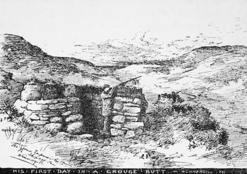

Rabbits, Partridges, And Pigeons. Part 6
Description
This section is from the book "Horses, Guns, And Dogs", by J. Otho Paget, George A. B. Dewar A. B. Portman, And A. Innes Shand. Also available from Amazon: Horses, guns and dogs.
Rabbits, Partridges, And Pigeons. Part 6
But you often cannot be at all sure where the rabbit will come out, or in what direction he will go when out. The one thing sure is that he will travel at a great pace. Sometimes he comes out to bolt off almost between your legs ; sometimes he comes out by the keeper, and takes such a line of flight that you must not put up your gun for fear of " an accident." The dogs being so near, it often happens that you dare not shoot for fear of touching one of them. Occasionally a rabbit going full pelt with the dogs at his heels, so that you cannot fire, will turn off at quite a sharp angle, and then it is just possible that you may be able to take him at the right moment without risking the lives of the dogs; but such shots are not good for beginners. Any fumbling over them may prove disastrous, for the dogs are very near, though not absolutely in the line of fire. Rabbits dislodged from these bushes clearly recognise their perilous situation, and, as the keeper says, they are " mighty quick." If you are not in good form, this sort of rabbit-shooting " finds you out" as soon as any I know.
It is pretty sport. On a certain wild, beautiful green spot, several hundred acres in extent, and largely sprinkled over with bushes such as these, I generally have an hour or so of this kind of shooting on several days each winter. Sometimes I work these bushes alone, with the aid of a dog or two, sometimes with the gamekeeper and with another gun; and I always regard it as the cream of that particular day's sport among the rabbits, if any are found in the bushes. From long experience we all come to gauge fairly well the likelihood of this or that bush holding a rabbit to-day, even before the dogs reach it. And in these several bushes — close to the denser covert — in the case of which one knows exactly where to stand, the rabbits, however much hustled, always retaining enough presence of mind to make for a thick row of blackthorn, etc., close at hand. One may take these rabbits at any distance between, say, fifteen and forty-five yards. Now and then a second barrel is fired at a rabbit distant fifty yards or a little more than that, but not often with effect. During the past season I brought off a long broadside shot with my first barrel at a rabbit in the open among these bushes ; the distance was not paced out after the shot, but it could not have been short of a full sixty yards. It was the longest shot I had brought off for many years, but not altogether a satisfactory one. Perhaps the only long shots at rabbits or hares which are really satisfactory, are those very occasional ones when the animal is hit in the head, and, despite the distance, killed outright.
This reminds me that it is necessary for the gunner to know how to put wounded creatures instantly out of their pain. Do not hold the rabbit or hare by the back legs and strike a sharp blow downwards on to the back of the head or neck. Many men with hard right hand can and do kill rabbits and hares in this way by one quick blow; but a less strong and practised hand will bungle. Instead, hold the rabbit or hare by the back legs, quickly take the back of the head well above the neck with your hand, and a slight pull downwards instantly kills the animal : see that your grasp is well above the neck, or your purpose of ending the pain of the animal swiftly will not be effected. Wounded birds should be dealt with in the same way. It is not a pleasant subject to be touched upon, is it ? But it must not be shirked. The wounding of bird and beast of chase, which, even with the straightest shooters in the world, must happen, is an incident in shooting which is distasteful, to say the least, to good sportsmen. And there are days when you are a good deal wrung by the pity of the thing. This is not the place to treat at length of the ethics of field sports—shooting, hunting, and angling.1 But I must say that I am unconvinced that the keen sportsman is necessarily a less humane man than those who decry our field sports chiefly on the ground that we have no right to inflict pain on living things. I believe it is a narrow and mistaken view to take, that field sports brutalise a man. The sporting squire of " Locksley Hall" was, to his rival, as a dog which " hunts in dreams " ; one who would hold his wife as " something better than his dog, a little dearer than his horse." In reality, as we know from the recantation in " Locksley Hall Sixty Years After," he was the " sound and honest rustic Squire." There are various grounds on which the three great English field sports can be defended, if ever there should be a real need for defence. One of the strongest of these, to my thinking, is that, by these fine exercises on horseback and afoot, we are storing health and hardness against the stealing years. It is a bounden duty that we keep supple in limb so long as possible in life, and never suffer the physical part of us to rust. Field sports are about the best means to that end. But to excel in these pursuits, to be racy of the chase, we should begin early in life. One hears of men who do not take to shooting till they have reached middle age, and who, notwithstanding, get a complete mastery over the gun ; though less often than one does of men who begin golf late in life and yet come to play very well ; but to be something of the real hunter, whether you wield horn, fishing-rod, or gun, you must be at it from boyhood.
1 Angling was called by Wordsworth the "blameless sport." Greatly, however, as I care for and believe in angling, I never could bring myself to think that the question of pain or suffering inflicted does not come in here at all.

Continue to:
- prev: Rabbits, Partridges, And Pigeons. Part 5
- Table of Contents
- next: Chapter III. Advanced Shooting. Pheasant Shooting